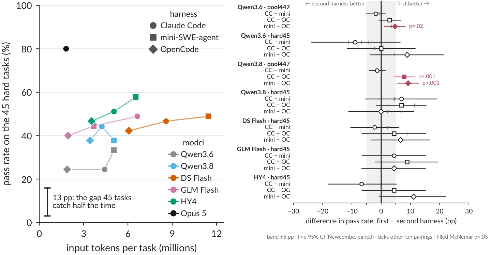
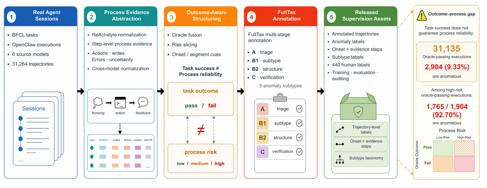
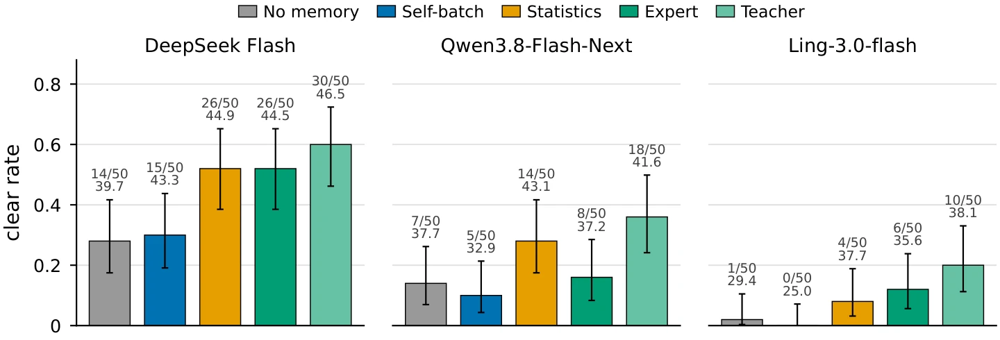
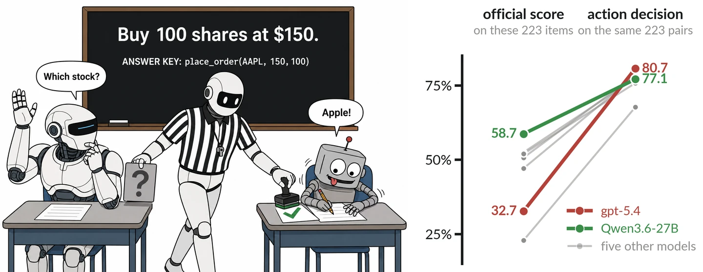

-
What Does a Harness Buy? Tokens, Mostly.
Coding-agent harnesses ship new releases constantly and are credited with pass-rate gains. Does the same model actually do better in a different harness? With same-configuration reruns as the noise floor, swapping harnesses on a hard subset of SWE-bench Verified flipped as many task outcomes as rerunning the same harness, across five models. On the larger task pool, tested with two models, the only harness effect that cleared the noise was a loss. What the harness did decide was cost, up to three times per task for the same model.

Left, input tokens against pass rate. Right, paired harness differences against the rerun noise band.View figure -
Silent Instrument Errors Reorder Agent Leaderboards
Can a leaderboard gap come from the grader rather than the agent? On HAL’s τ-bench Airline leaderboard, a general-purpose agent trails a scaffold built for that benchmark by 13 points on the tasks that touch its database, but only about half of its episodes were ever graded and the rest were stored as failures. Grading them under the benchmark’s own rule closes the gap without rerunning any agent. An audit of HAL and τ²-bench from their published artifacts found three more errors of this kind, and HAL’s maintainers confirmed three of the four and added disclosures. The code that grades, logs and replays an evaluation is part of the measurement, and when it fails, scores and rankings move with no visible sign.
-
OpenClawBench: Benchmarking Process-side Anomalies in Real-world Agent Execution Trajectories
Can an agent pass its final task check and still have acted badly along the way? OpenClawBench is a benchmark of process-side anomalies in real agent execution trajectories: executions that pass the check but ignore errors, make unsafe external writes, or commit to weakly grounded claims. I built the 31,264-trajectory dataset from generation through cleaning and trained its trajectory-level anomaly detector, a LoRA-fine-tuned open model.

From real agent sessions to process-anomaly labels. Passing the task does not guarantee a clean process.View figure -
Experience Is Not Knowledge: Where the Decision Knowledge in an Agent’s Memory Comes From
Agents are often improved by writing a memory from their own trajectories, and the gain is credited to experience. Such a memory also carries what the writer already knew, so where does the useful part come from? In a Slay the Spire testbed that varies only the source of the memory, the agent’s self-written memory gave no detectable improvement in clear rate. A teacher memory, in which a stronger model read the agent’s own games, gave the one gain that survived multiple-comparison correction. Replay at shared decision states showed the agent acting on its own memory, and a wrong rule it drew from its own games became a new error.

Clear rate by source of memory, for three agents.View figure -
Asking Earns Nothing: Scoring the Decision to Act in BFCL Multi-Turn
An agent that lacks the information it needs should ask rather than act. BFCL multi-turn builds two of its four categories around that decision, yet its scorer skips the very turn on which the agent should ask, so asking earns no credit. A judge-free decision metric, built from the benchmark’s own paired complete and incomplete requests, shows what the official score misses. A one-line prompt pushing an agent toward action raised official scores on the two should-ask categories and their base twins by 13.5 to 23.5 percentage points with no detectable change in its decision accuracy, and the model that decided best ranked sixth of seven tested models under official scoring on the same items.

The skipped clarification turn, and the ranking that changes once the decision itself is scored.View figure


Earlier work: efficient training
-
Rethinking Dataset Quantization: Efficient Coreset Selection via Semantically-Aware Data Augmentation
Does coreset selection need a large pretrained model? Dataset Quantization relies on one and augments data only after selecting it, so selection and training see different data. Our version finds objects for semantically aware augmentation with a randomly initialized CNN and augments before selecting. It is competitive with or better than prior methods on ImageNet-1k and fine-grained datasets, at lower cost than the original method.